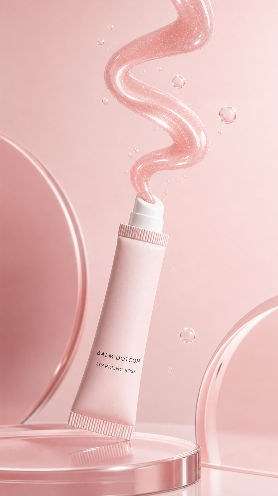

Concept created by LoomixUnsolicited concept
GlossierReels + TikTok9:167 seconds
Balm Dotcom — Sparkling Rosé
The squeeze tube and cushiony tinted texture give the product an immediate motion hook. This direction lets the glossy balm ribbon carry the entire transition from tube to swipe-ready finish.
Create the full adOpen product pageAI-generated visual direction

Concept art for discussion only. Product and brand belong to Glossier.
Hooks
Squeeze. Swipe. Sparkle softly.A cushiony hint of rosé.The balm you miss before it runs out.
Six-shot storyboard
- Open tight on the angled applicator.
- Squeeze out one smooth pink balm ribbon.
- Let tiny rosé-like bubbles catch the light.
- Swipe once across a clean acrylic surface.
- Show the cushiony texture settling into shine.
- End on the tube and CTA.
Caption
A cushiony swipe with the softest rosé shimmer.
LoomixLoomix turns one product photo into a storyboard, short video, captions, and ready-to-post ad copy.